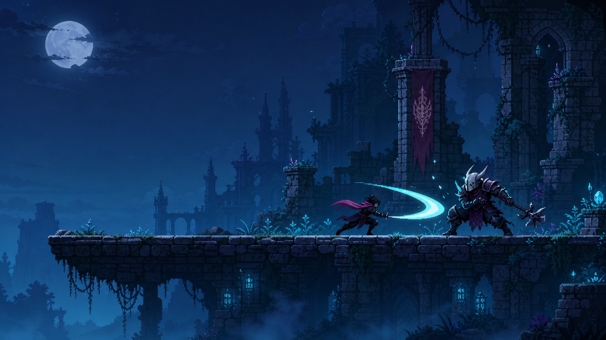
Unity와 AI 도구(Codex, Stable Diffusion)를 활용해 한 달, 총 4회 수업 동안
나만의 '횡스크롤 액션 게임' MVP를 실습으로 완성합니다.
이후 1~5개월 자유 기획 제작 단계부터는 실제 배포와 스팀(Steam) PC 출시를 목표로 개발합니다.
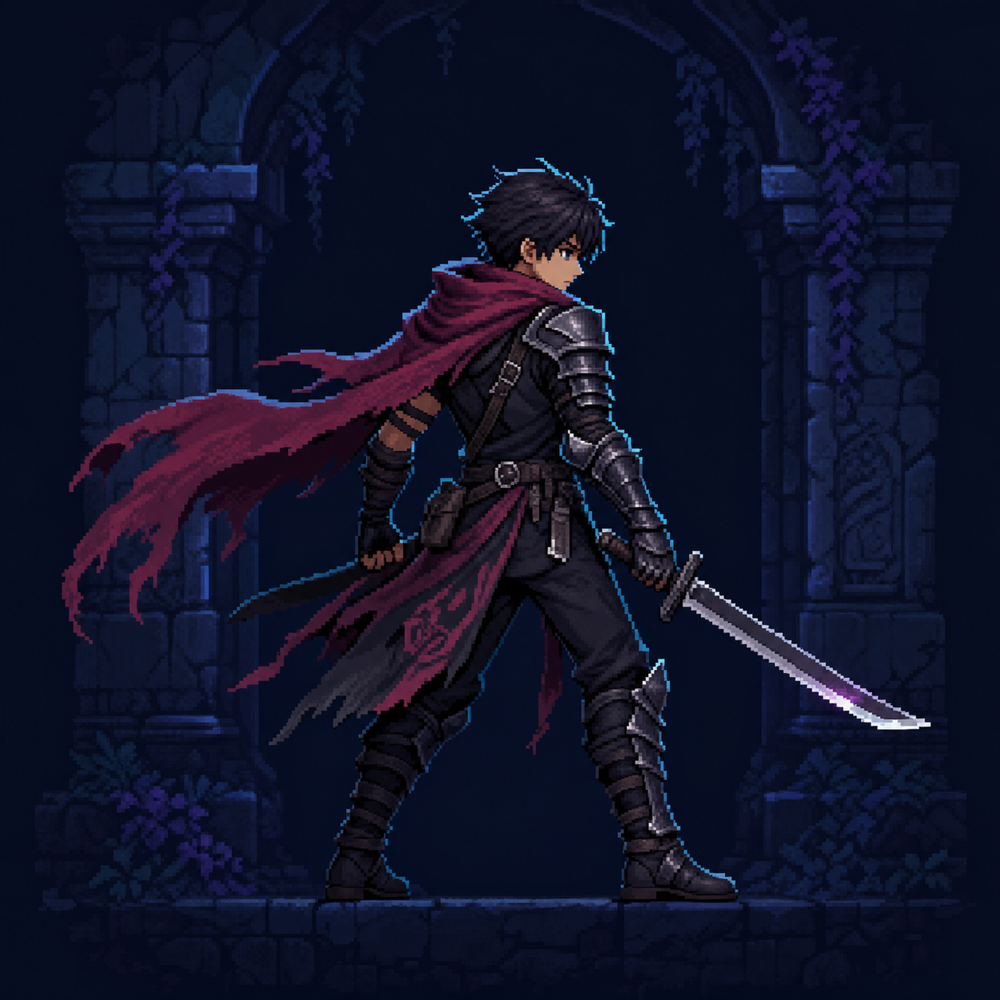
Stable Diffusion으로 캐릭터의 실루엣과 분위기를 설계하고, 이동·점프·공격 애니메이션에 맞는 게임 에셋으로 다듬습니다.
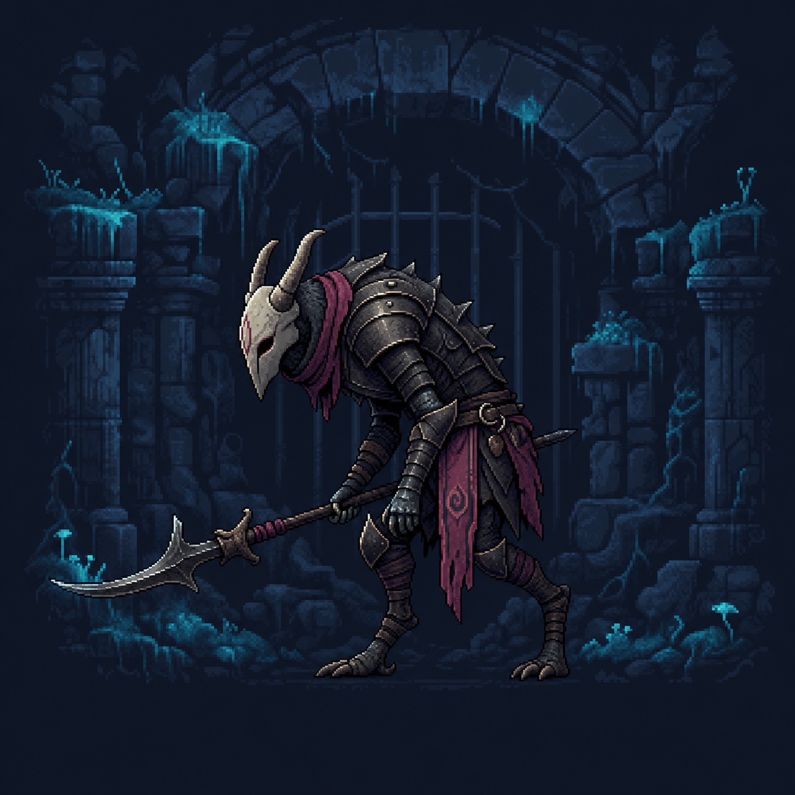
“적이 발판을 순찰하다 플레이어를 발견하면 추격하고 공격하게 해줘.” 자연어로 설계한 행동을 Codex와 함께 Unity 로직으로 구현합니다.
최근 게임업계는 실무에 바로 투입될 수 있는 역량을 갖춘 인재를 선호하는 추세입니다. 많은 채용 담당자들이 단순한 문서나 튜토리얼을 넘어, 실제로 동작하는 게임과 코드, 그 해결 과정을 설명할 수 있는 프로젝트 경험을 통해 지원자의 실무 적응력을 가늠하곤 합니다.
수업에서 만든 결과물이 취업과 입시를 무조건 보장하는 '정답'은 아닐 수 있습니다. 하지만 치열한 경쟁 속에서 "저는 작은 규모라도 끝까지 완성해 본 경험이 있습니다"라고 자신 있게 증명할 수 있는 실질적이고 든든한 포트폴리오 기반이 되어줄 것입니다.
수많은 현업 게임 스튜디오들이 이미 AI를 적극 활용 중이며, 이제 AI는 선택이 아닌 필수 생산성 도구로 자리 잡았습니다. 이 수업에서는 코딩에 Codex, 픽셀 아트에 Stable Diffusion을 활용합니다.
단, AI가 모든 것을 대신해 주지는 않습니다. AI는 반복 작업을 줄여주는 보조 도구이며, 게임 구조를 설계하고 결과물을 판단·조합하여 하나의 게임으로 완성해 내는 핵심 역량은 여러분이 직접 다질 수 있도록 훈련합니다.
각 파트에 맞는 실질적인 이점을 확인하세요. 탭을 눌러 자세히 살펴보세요.
자기소개서·면접에서 "게임이 만들고 싶습니다" 대신 "이 게임을 만들었습니다"로 시작할 수 있습니다.
※ 같은 2~3분의 평가 시간, 전달되는 정보의 밀도 차이
1개월(주 1회 3시간, 총 4회)로 액션 게임 MVP를 실습으로 완성한 뒤, 1~5개월간 나만의 기획으로 실제 배포까지 제작을 이어갑니다.
Unity + Codex + SD 도구 통합 및 기본 액션 컨트롤러 구현
캐릭터 스프라이트 생성, 히트박스 공격 판정과 콤보 구현
횡스크롤 맵 제작, 적 AI 패턴과 난이도 밸런싱
UI/사운드 폴리싱과 버그 픽스로 실습용 MVP 완성 (배포는 진행하지 않음)
본인이 설계한 게임을 직접 제작하고 WebGL · PC로 배포, 완성도에 따라 스팀 출시까지 도전
Unity, Codex, Stable Diffusion 설치·연동. 이동·점프·중력 등 기본 액션 컨트롤러를 AI와 함께 구현하며 프롬프트 작성법을 훈련합니다.
Stable Diffusion으로 캐릭터·적 스프라이트를 생성하고 애니메이션을 적용합니다. 히트박스 기반 공격 판정, 콤보, 체력 시스템을 구현합니다.
횡스크롤 맵과 타일맵을 제작하고 카메라 추적 시스템을 구현합니다. 적 AI 이동 패턴과 공격 로직, 난이도 밸런싱을 진행합니다.
체력바·점수 UI, 사운드 이펙트를 적용하고 버그를 수정해 실습용 MVP를 완성합니다. 이 프로젝트는 별도 배포 없이 회고로 마무리하며, 배포·출시는 다음 자유 기획 제작 단계부터 진행합니다.
1개월 기초 과정을 완주하면 두 번째 달부터는 본인이 설계한 게임을 실제 제작 흐름에 맞춰 발전시킵니다. 아래 10단계는 순서대로만 진행되는 것이 아니라 프로그래밍·아트·테스트가 서로 겹쳐 반복되며, 범위와 완성도에 따라 1개월에서 최대 5개월까지 학생별로 조정됩니다.
재난 도시의 에너지 중계기를 지키기 위해 대원을 배치하고, 적의 이동 경로와 스킬 타이밍을 판단하는 오리지널 애니풍 디펜스 게임을 예시로 제작 과정을 설명합니다.
누구를 지키고, 무엇을 판단하며, 한 판이 어떻게 끝나는지를 먼저 정합니다. 레퍼런스는 분위기와 장단점을 분석하는 용도로만 사용하고 실제 제작 가능한 최소 기능으로 범위를 줄입니다.
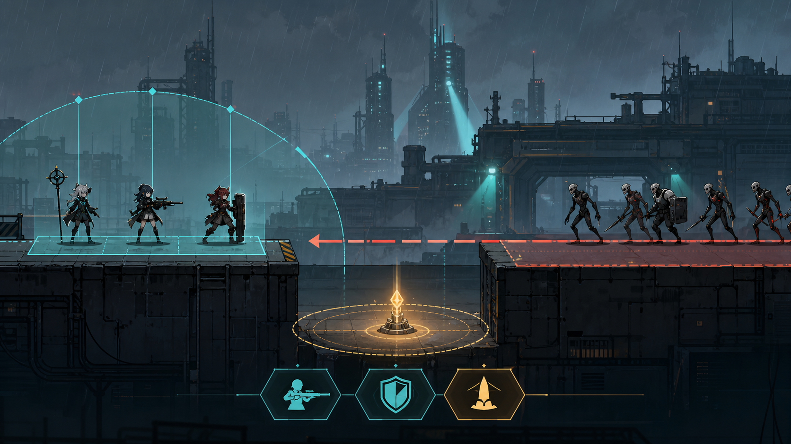
플레이어가 기억할 진영과 사건을 정하고, 역할이 한눈에 보이는 캐릭터 실루엣을 설계합니다. 공격·방어·지원 대원과 일반·중장갑·비행 적의 기능을 외형에 연결합니다.
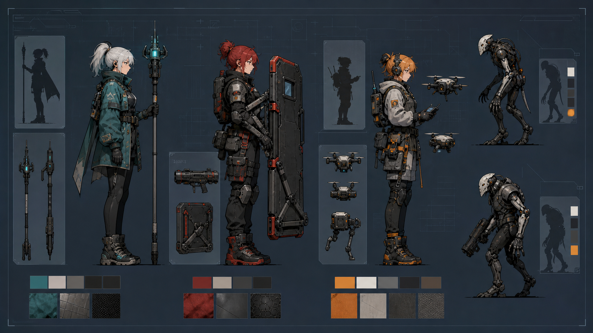
배치 자원, 공격 범위, 고저차, 이동 경로, 환경 장치가 서로 어떤 선택을 만들지 설계합니다. 예시 프로젝트에서는 발전기·이동식 방벽·증기구·비행 경로를 조합합니다.
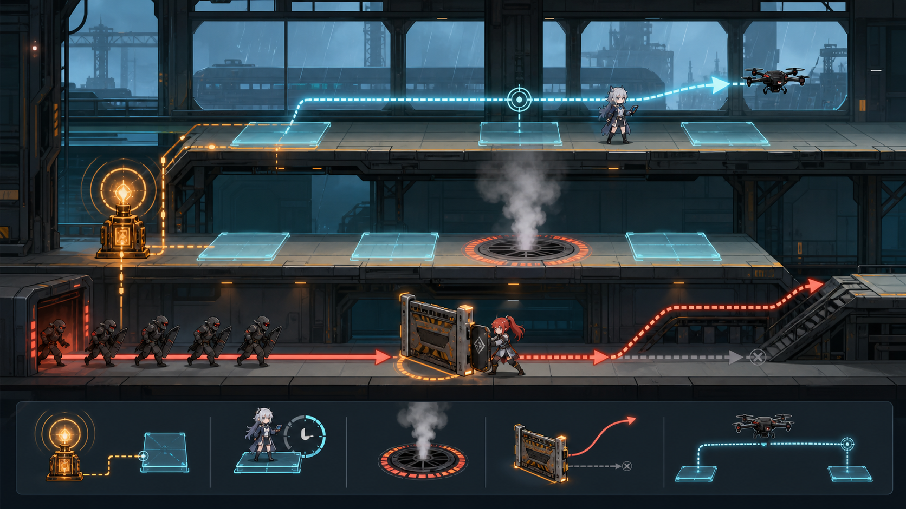
최종 그림보다 먼저 도형과 임시 캐릭터로 배치·공격·저지·웨이브 한 사이클을 구현합니다. 이 단계에서 재미가 약하면 아트를 만들기 전에 규칙과 속도를 수정합니다.
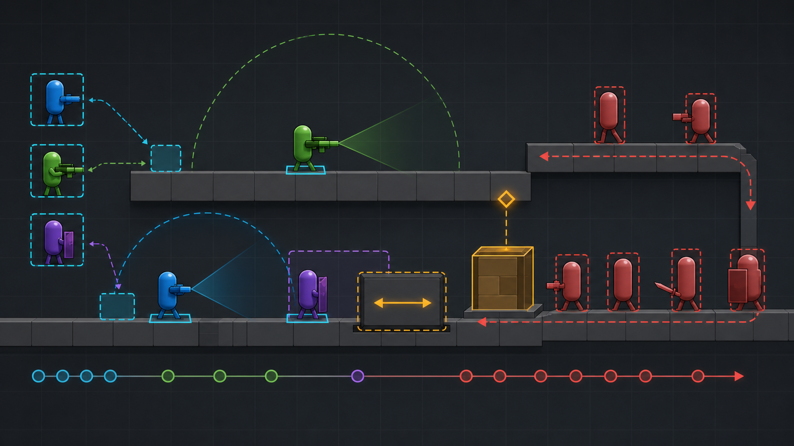
Codex와 기능 명세를 나누어 구현하고, 생성된 코드를 직접 실행·검증·수정합니다. 배치 가능 칸, 타겟 탐색, 공격 주기, 피해 계산, 적 상태 머신, 웨이브와 저장 데이터를 연결합니다.
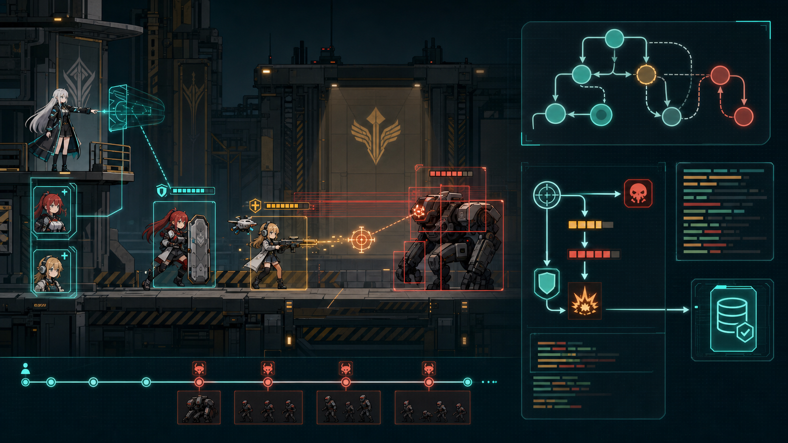
생성형 AI로 방향을 탐색한 뒤 게임 화면에서 일관되도록 직접 선별하고 후가공합니다. 대원·적 애니메이션, 모듈형 발판, 배경 레이어와 소품을 Unity 규격에 맞춰 임포트합니다.
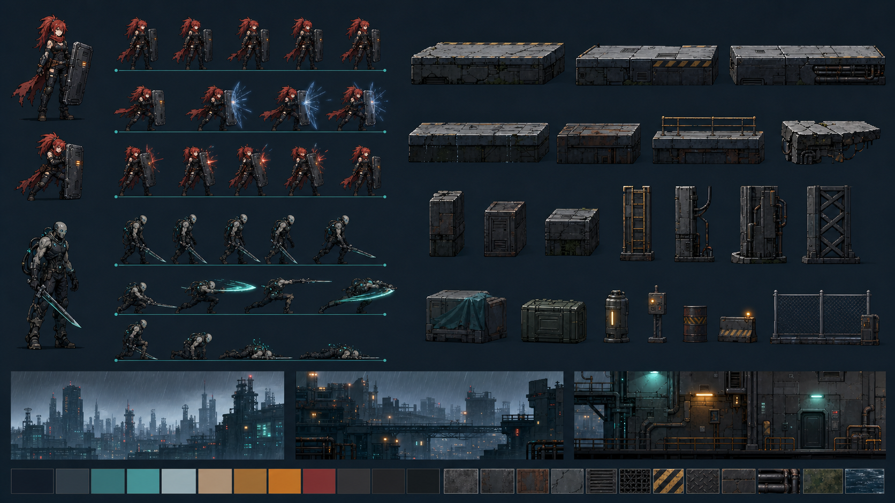
공격 전에 위험을 알리고, 공격 순간에는 결과를 분명히 전달하도록 스킬·피격·보호막·경고 이펙트를 제작합니다. SFX와 화면 흔들림은 정보가 묻히지 않는 범위에서 적용합니다.
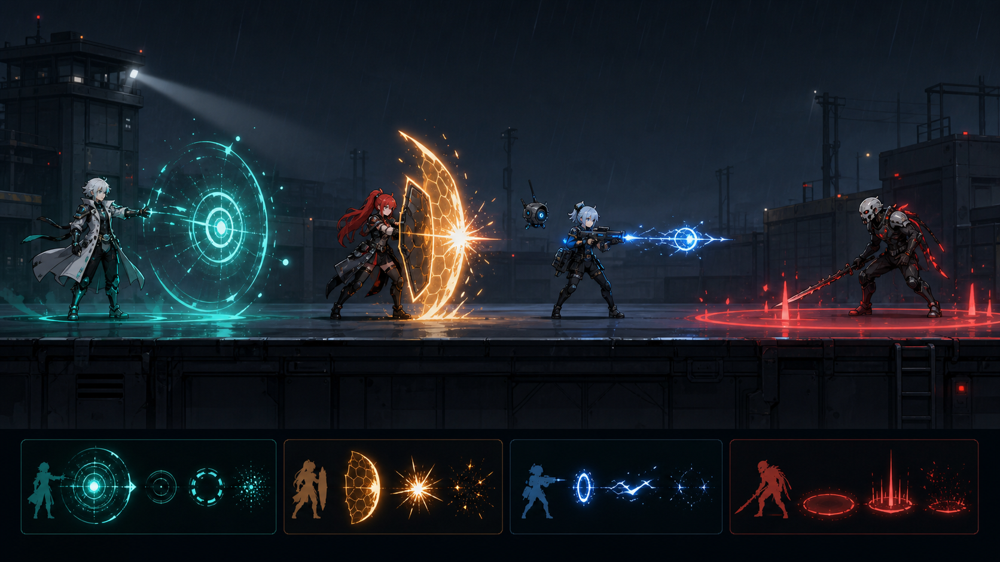
플레이어가 지금 무엇을 할 수 있는지 즉시 파악하도록 정보의 우선순위를 정합니다. 체력·웨이브·배치 자원·대원 카드·유효 위치·일시정지·결과 화면을 하나의 디자인 시스템으로 만듭니다.
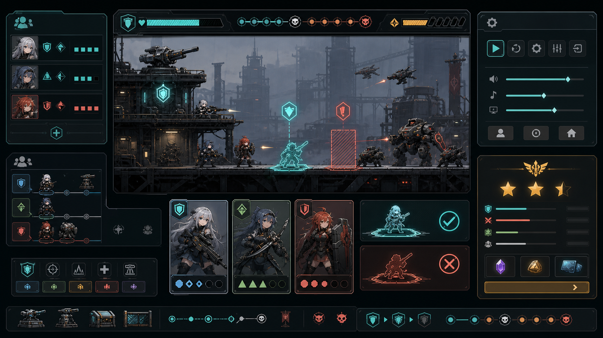
난이도를 감으로만 정하지 않고 실제 플레이 기록과 피드백으로 수정합니다. 최소 3~5회의 외부 테스트를 진행해 막히는 구간, 지나치게 강한 조합, 조작 오류와 성능 문제를 찾아냅니다.
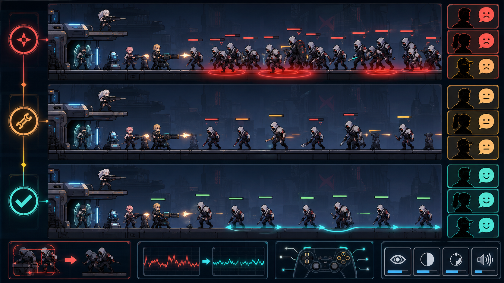
이미지 용량과 프레임을 최적화하고 입력 장치·해상도·저장 기능을 최종 점검합니다. WebGL과 PC 빌드, GitHub 공개 페이지까지 완성하며 준비된 프로젝트는 스팀 출시에도 도전합니다.
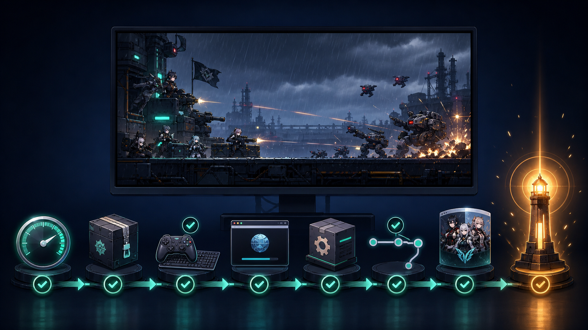
※ 스팀 출시는 도전 목표이며, 완성도와 심사 결과에 따라 모든 프로젝트의 출시를 보장하지는 않습니다.
수강 전 가장 자주 받는 질문 7가지 · 클릭하면 답변이 펼쳐집니다
코딩 무경험자 기준으로 설계된 커리큘럼입니다. Codex가 코드를 생성하고, 수강생은 그것을 읽고 수정하는 훈련을 합니다. 필요한 개념은 매주 수업 중 즉시 공급됩니다.
AI는 반복 작업을 줄여주는 도구입니다. 기획을 구조화하고 AI 결과물을 검증·조합해 하나의 게임으로 완성하는 판단력이 핵심 역량이며, 이 부분은 AI에 위임되지 않습니다.
주 1회, 회당 3시간 수업입니다. 한 달 4회 일정으로 직장 · 학교와 병행 가능한 구조입니다. 자유 기획 제작 단계에서도 동일한 주기로 진행됩니다.
1개월 기초 과정을 마친 뒤 본인만의 게임 기획서를 작성하면, 강사와 함께 기획 규모에 맞는 예상 기간과 로드맵을 설계합니다. 이후 진행 상황에 따라 매달 일정을 유동적으로 조정합니다.
스팀 출시는 이 과정의 도전 목표입니다. 다만 모든 프로젝트의 출시를 보장하지는 않으며, 완성도와 Steamworks 심사 결과에 따라 달라질 수 있습니다. 출시 준비 단계에서 스토어 페이지 제작부터 빌드 패키징까지 함께 진행합니다.
네, 수업에서 코딩 어시스턴트로 Codex를 사용하기 때문에 Codex Plus 구독이 필요합니다. 자세한 준비물은 하단 '수강 전 준비물'을 확인해주세요.
이 수업의 핵심 목표가 그것입니다. Unity · Codex · Stable Diffusion · GitHub 개발 환경이 그대로 남고, 자유 기획 제작 단계에서 익힌 워크플로로 이후에도 다른 프로젝트를 이어갈 수 있습니다.